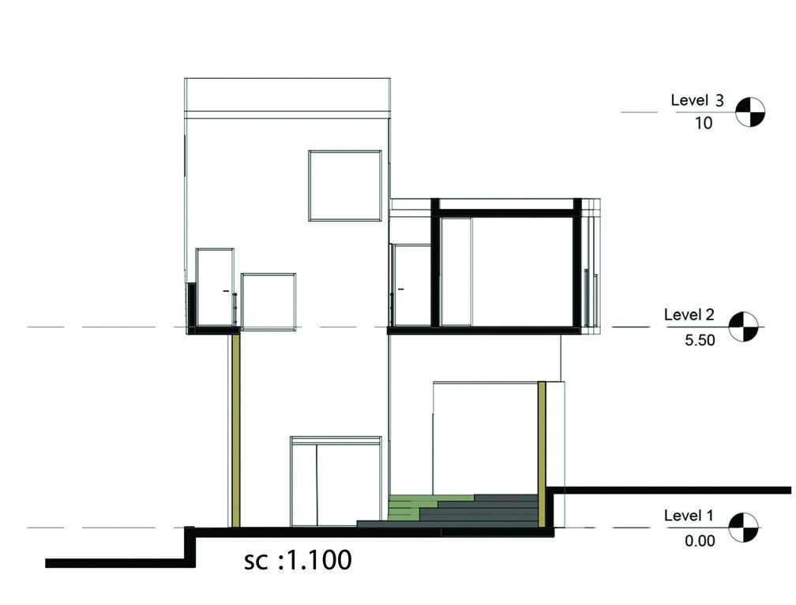
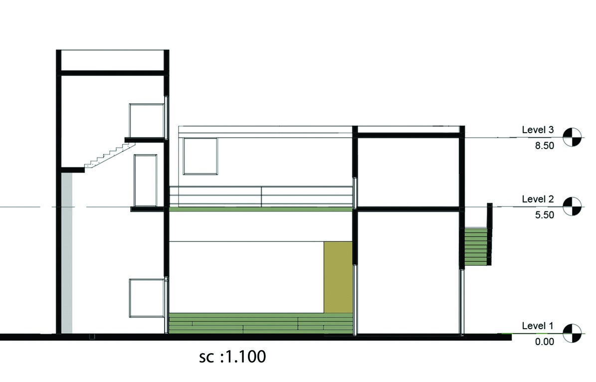
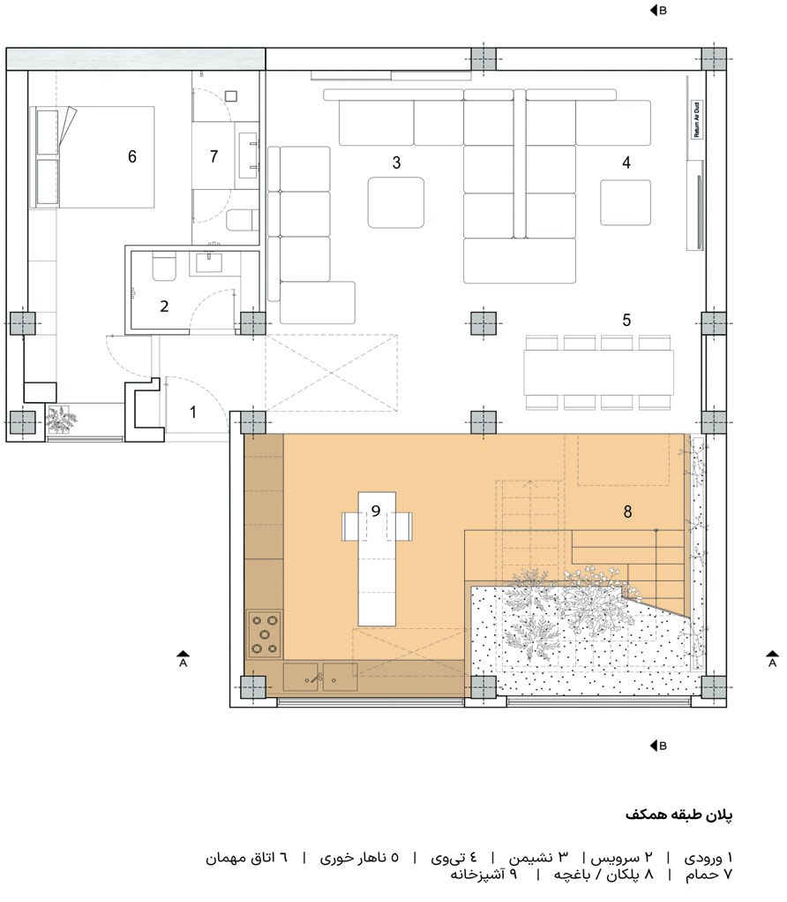
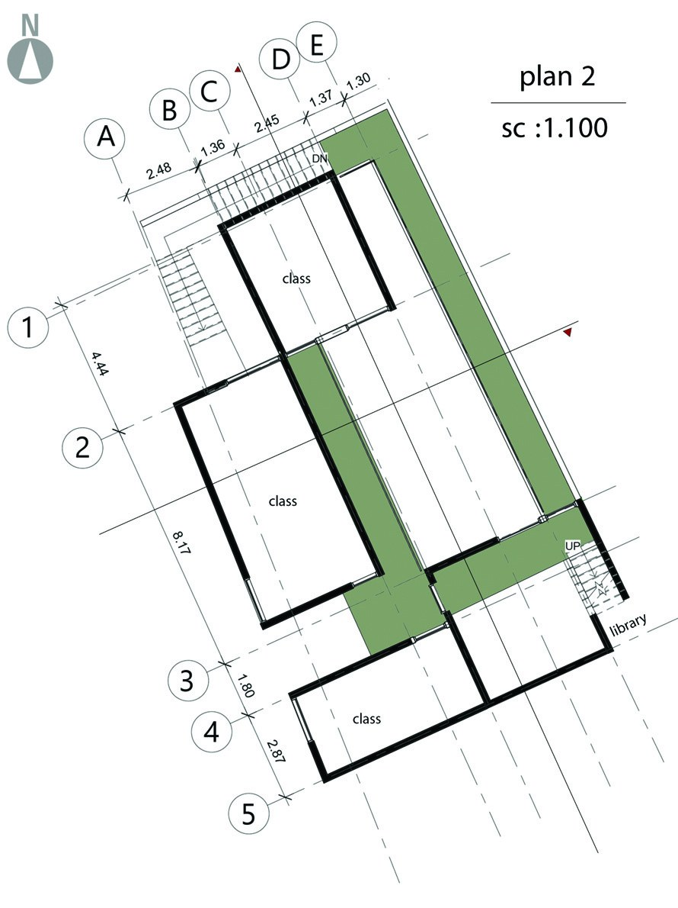
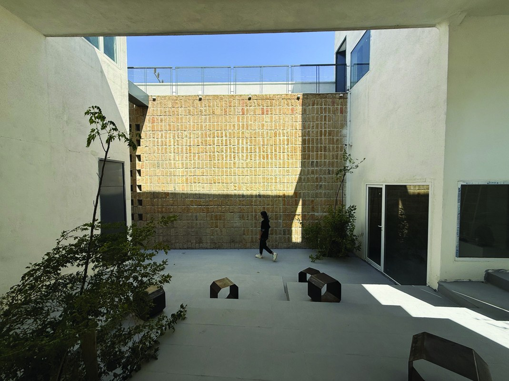
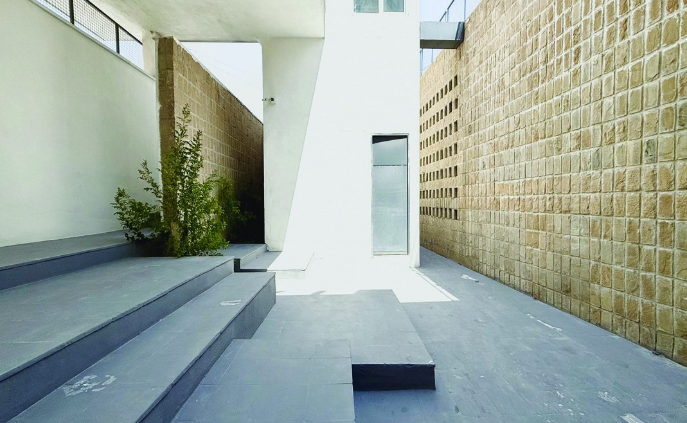
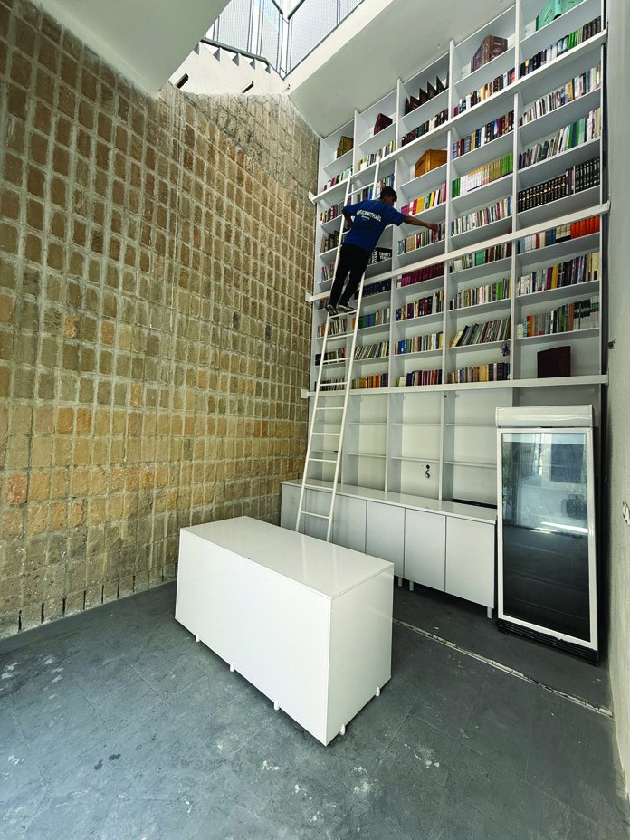

مجتمع فرهنگی ووچو، گچساران
VOUCHOU CULTURAL COMPLEX · GACHSARAN · SHEET 02: PLANS, SECTIONS & ATMOSPHERE
اهمیت نوع مدیریت مجموعه و استقلال کامل آن سبب شد فضاها با توجه به تجربه هونه به صورت لایهای و خودگردان طراحی شوند تا هر بخش بدون تداخل عمل کند:





بهرهگیری از حیاط با سقف بلند، سایهاندازها و پلههای نشیمن چندلایه به عنوان یک فضای جمعی برای نمایش فیلم، اجرای تئاتر، نمایشگاه و گفتگوهای محلی در ساعات عصر و شب.

دیواره کشیده سنگ مالون تیشهخورده با انعکاس هویت بومی، حرکت ناظر در لایهها و ترازهای ارتفاعی متناوب را هدایت کرده و حس دعوتکنندگی عمیقی به عمق مجموعه ایجاد میکند.

فضای مطالعه استاندارد با قفسهبندی تمامقد سفید و نردبان کشویی در امتداد دیواره سنگی بومی؛ ایجاد محیطی امن و آرامشبخش برای پرورش فکری کودکان و جوانان محله محروم لبنان.